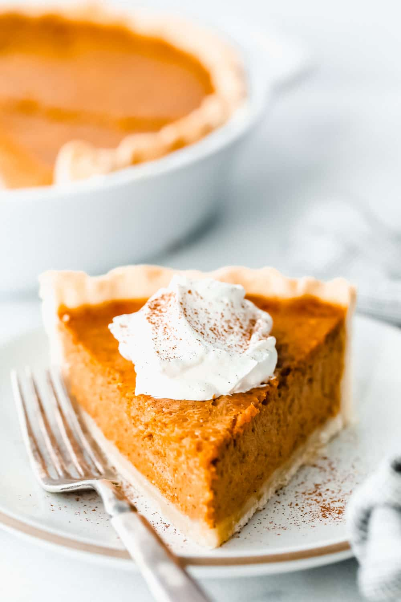

Pumpkin Pie

Description
This here is my great, great, great grandmother's delicious Pumpkin Pie. A staple in our family's history.
This delicous recipe will leave you celebrated at your family's next gathering
Here are the ingredients
- 2 large eggs
- 1 large egg yolk
- 1/2 cup paceded dark brown sugar
- 1/3 cup white sugar
- 1/2 teaspoon salt
- 2 teaspoons cinnamon
- 1 teaspoon ground ginger
- 1 teaspoon ground ginger
- 1/4 teaspoon ground nutmeg
- 1/4 teaspoon ground cloves
- 1/8 teaspoon cardamom
- 1/2 teaspoon finely grated lemon zest
- 2 cups pumpkin purée from a sugar pumpkin (see Recipe Note) OR 1 (15-ounce can) pumpkin purée (can also use puréed cooked butternut squash)
- 1 1/2 cups heavy cream or 1 (12-ounce) can evaporated milk
- homemade pie crust, chilled or frozen (see pâte brisée recipe or our no-fail flaky pie crust recipe), or 2 pre-made pie shells
Here is the recipe
- Preheat your oven to 425°F.
- Beat the eggs in a large bowl. Mix in the brown sugar, white sugar, salt, spices — cinnamon, ground ginger, nutmeg, ground cloves, cardamom, and lemon zest. Mix in the pumpkin purée. Stir in the cream. Beat together until everything is well mixed.
- Pour the filling into an uncooked chilled or frozen pie shell. Bake at a high temperature of 425°F for 15 minutes.Then after 15 minutes, lower the temperature to 350°F. Bake for 45 to 55 minutes more. The pie is done when a knife tip inserted in the center comes out wet but relatively clean. The center should be just barely jiggly. (About half-way through the baking, you may want to put foil around the edges or use a pie protector to keep the crust from getting too browned.) Note that the pumpkin pie will come out of the oven all puffed up (from the leavening of the eggs), and will deflate as it cools.
- Cool the pumpkin pie on a wire rack for 2 hours.